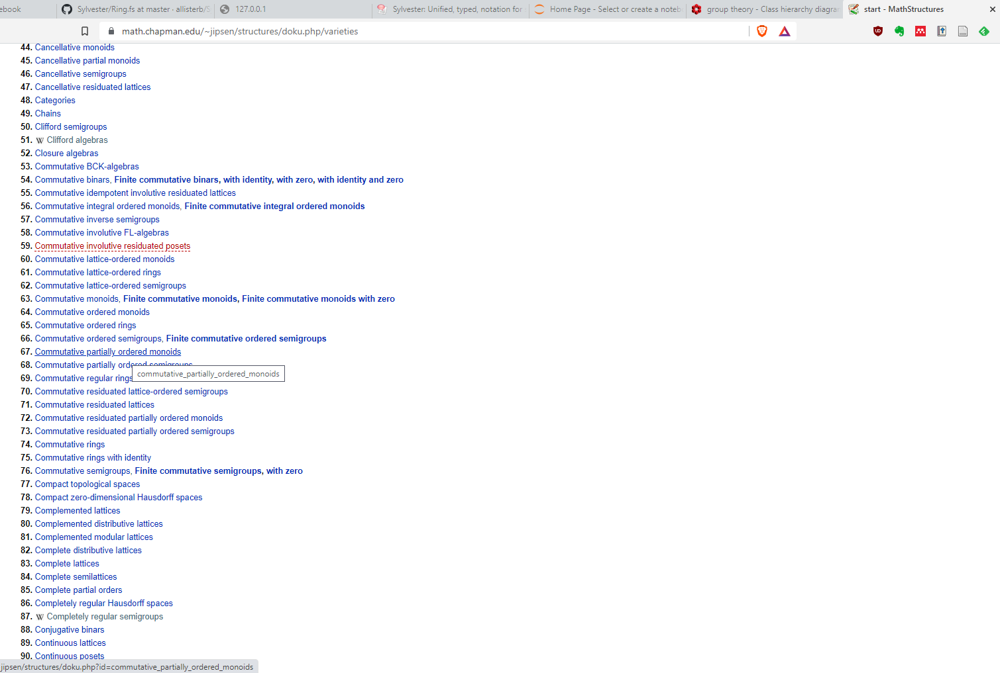
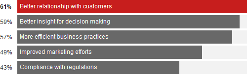
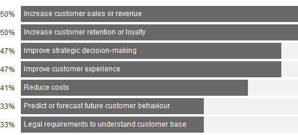
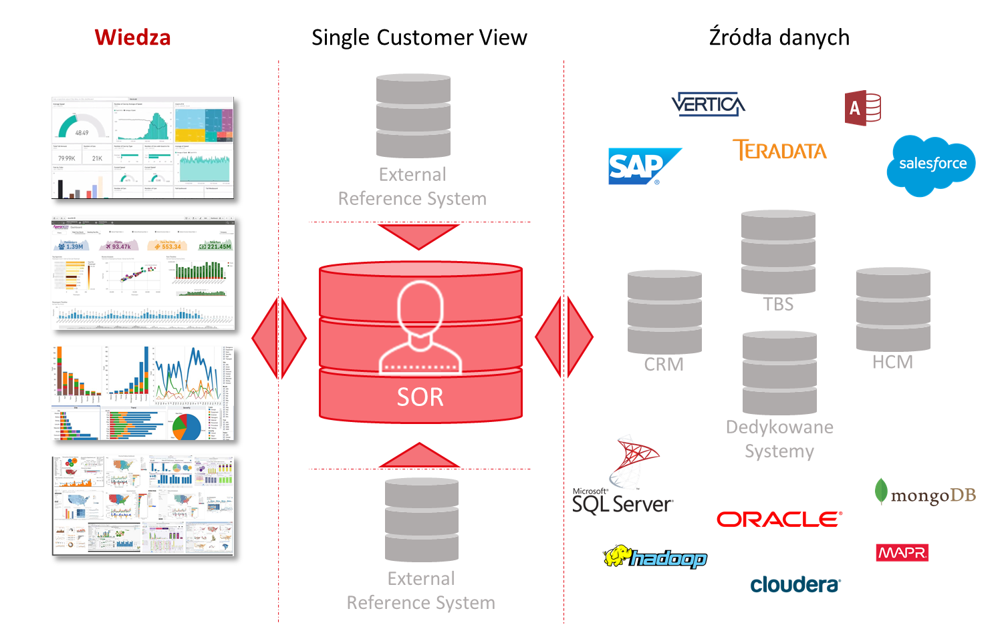
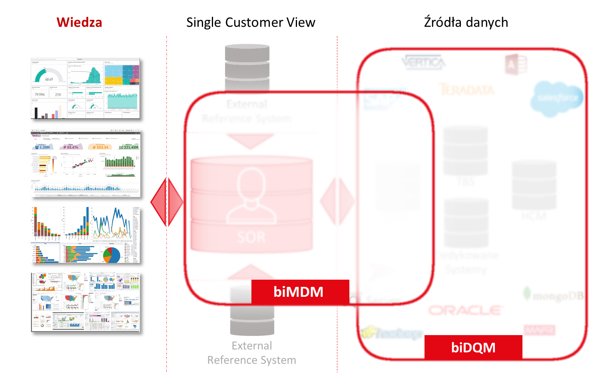
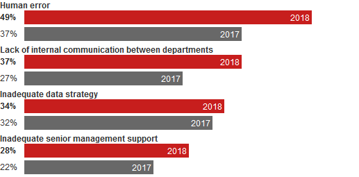
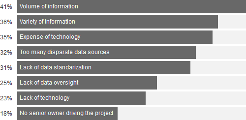
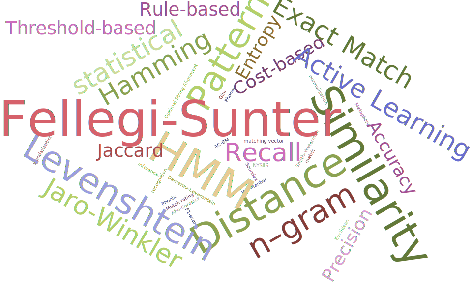

Sylvester
A unified, typed notation for symbolic mathematics and proof
Allister Beharry
August 22nd 2021
Sylvester language...
- Things Sylvester is desgined to do
- Provide a unified language for representing and doing symbolic mathematics and logic
- Provide a unifed interface to open-source math and logic tools like Maxima,
- Take advantage of modern functional language tools and environments, Visual Studio, Jupyter Notebooks.
- Things Sylvester not designed to do:
- Implementations of symbolic operations comparable to Maxima, GAP
- High-performance numeric computing
Overview...
- F# eDSL Leverage f
- Leverage full power of a statically-typed object based functional language compared to DSL CAS lik
- Use first-class functions, inheritance
- Use
- Contrast with DSLs for CAS:
- Mathematica (Wolfram Language)
- Maxima
- MathCad
- Maple
- Narodowy Fundusz Zdrowia: nadużycia upcoding i unbundling.
Object-oriented Abstract Algebra Representation
Many, many potential classes...

https://math.chapman.edu/~jipsen/structures/doku.php/varieties
Potrzeby wg. szczebla kierowniczego
Areas of strategic competitive advantage, U. S.

The 2018 global data management benchmark report
Source: Experian Data Quality
Spójna wiedza o klientach
- Zagregowana
- Ujednolicona
- zestandaryzowana
- znormalizowana
- Wyczyszczona
- Zdeduplikowana
- Zweryfikowana
- Uzupełniona
- Temporalna / Historyzacja
- Rozszerzona?
Motywacja
Drivers for single customer view initiatives, U. S.

The 2018 global data management benchmark report
Source: Experian Data Quality
Schematycznie


Bolączki: brudne dane
Top factors contributing to data inaccuracies, U. S. [1]

The 2018 global data management benchmark report
Source: Experian Data Quality
Bolączki: brudne dane
Top factors contributing to data inaccuracies, U. S. [2]

The 2018 global data management benchmark report
Source: Experian Data Quality
biDQM
You can have data without information, but you cannot have information without data.Daniel Keys Moran
Cechy produktu:
- Interoperacyjność technologiczna
- Automatyzacja procesów data
management - Testy: predefiniowane, konfigurowalne
- Harmonogramator: wyzwalacze, kalendarz
- Użyteczne wizualizacje
- Data cleansing
- Uzupełnianie danych niekompletnych
- Nadpisywanie danych nieprawidłowych
- Price-Value na tle innych rozwiązań
Bolączki: System of Record
Primary factors preventing single customer view initiatives, U. S.

The 2018 global data management benchmark report
Source: Experian Data Quality
Modus Operandi
| radom 26615 ul. Władysława Andersa | |||||||
| nazwa | cecha | nazwa 2 | nazwa 1 | miasto | kod | ||
| fryzjer | ul. | Władysława | Andersa | radom | 26615 | ||
| ↓ | ↓ | ↓ | ↓ | ↓ | ↓ | ||
| [ | 35% | 100% | 10% | 100% | 100% | 100% | ] |
| ↑ | ↑ | ↑ | ↑ | ↑ | ↑ | ||
| Salon Fryzjerski | ulica | W | Andersa | Radom | 26-615 | ||
| ulica W Andersa, 26-615 Radom | |||||||
| ✔ match | |||||||
|---|---|---|---|---|---|---|---|
Modus Operandi
| pl. Alberta Andersa; 26-613 | |||||||
| nazwa | cecha | nazwa 2 | nazwa 1 | miasto | kod | ||
| Salon Urody | pl. | Alberta | Andersa | Radom ← | ← 26-613 | ||
| ↓ | ↓ | ↓ | ↓ | ↓ | |||
| [ | 55% | 0% | ― | 100% | 100% | 85% | ] |
| ↑ | ↑ | ↑ | ↑ | ↑ | |||
| Salon Fryzjerski | ulica | Andersa | Radom | 26-615 | |||
| ulica Andersa, 26-615 Radom | |||||||
| ✘ unmatch | |||||||
|---|---|---|---|---|---|---|---|
Record Linkage
biMDM
Cechy produktu:
- Spójne dane o podmiotach:
- Agregacja danych z wielu źródeł
- Algorytmy łączenia i deduplikacji:
- deterministyczne
- probabilistyczne
- uczenie maszynowe
- z zastosowaniem logiki rozmytej
- Źródła referencyjne dla czyszczenie i imputacja danych
- Ocena ufności informacji danych o podmiotach
- Raporty stanu rekordów i rozbieżności w źródłach
- Możliwa integracja z zewnętrznymi źródłami danych
Podsumowanie
- Profil Insight
- Klienci w centrum uwagi
- Spójna wiedza o klientach:
- czym jest
- co pozwala uzyskać
- Bolączki:
- brudne dane i z czego wynikają
- czynniki utrudniające wdrożenie centralnego repozytorium informacji o klientów
- Przedstawienie rozwiązań stosowanych w obszarze zarządzania jakością i spójnością danych o klientach